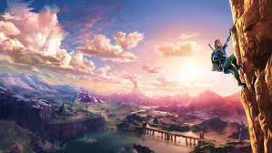
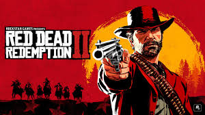
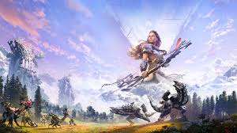
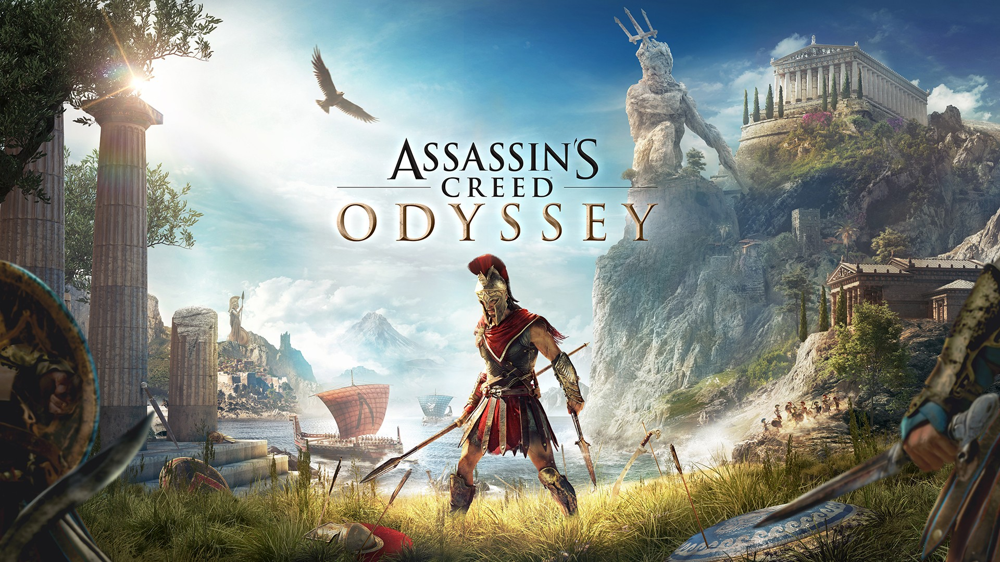

Legend of Zelda breath of wild
Step into the breathtaking kingdom of Hyrule in The Legend of Zelda: Breath of the Wild, an open-world masterpiece from Nintendo. Unlike traditional Zelda games, this adventure gives you total freedom — climb any mountain, glide across vast valleys, and tackle challenges in any order you choose. From cooking hearty meals to survive freezing peaks, to taming wild horses and solving ancient shrine puzzles, every moment feels like your own story. The world reacts to your creativity — set grass on fire to create an updraft, roll boulders onto enemies, or use the environment to your advantage in battle. With its stunning art style, dynamic weather system, and endless secrets waiting to be discovered, Breath of the Wild isn’t just a game — it’s a journey that redefines what open world exploration can be.
Ghost of Tushima

Set in late 13th-century Japan during the Mongol invasion, Ghost of Tsushima immerses players in a breathtakingly beautiful yet war-torn world. You play as Jin Sakai, a samurai torn between honoring the traditional samurai code and embracing unconventional tactics to protect his homeland. The game stands out for its stunning landscapes, from golden fields and cherry blossom forests to misty mountains and serene temples. What makes it unforgettable is its fluid combat system, blending precise swordplay with stealth and archery, alongside an emotional story about sacrifice, honor, and identity. The world feels alive — foxes guide you to shrines, the wind directs your path instead of a map, and every corner hides secrets to discover. It’s not just an open-world adventure; it’s a cinematic journey into samurai legend.
Red Dead Redemption 2
Step into the shoes of Arthur Morgan, an outlaw and member of the Van der Linde gang, in the sprawling open world of Red Dead Redemption 2. Set in the late 1800s, this game masterfully captures the essence of the American frontier, offering players a rich narrative experience filled with complex characters and moral dilemmas. The game's attention to detail is astounding — from the way Arthur interacts with the environment to the dynamic weather system that affects gameplay. Players can hunt, fish, and engage in various side activities, all while navigating the challenges of life as an outlaw. The story is both epic and intimate, exploring themes of loyalty, betrayal, and the struggle for redemption. With its breathtaking visuals, immersive world, and compelling storytelling, Red Dead Redemption 2 is a landmark achievement in open-world gaming.
Horizon Zero Dawn
In a world overrun by robotic creatures, Horizon Zero Dawn follows Aloy, a young hunter with a mysterious past, as she seeks to uncover her history and the fate of the ancient world. The game’s open world is a stunning blend of lush landscapes, towering mountains, and remnants of a forgotten civilization. Players can explore this vast world on foot or by using a variety of mounts, engaging in strategic combat against the robotic foes that inhabit it. The game’s crafting system allows for deep customization of weapons and gear, enabling players to approach challenges in their own unique way. With its rich narrative, memorable characters, and breathtaking visuals, Horizon Zero Dawn is a standout title in the open-world genre.
Assassin's Creed Odyssey
Set in ancient Greece during the Peloponnesian War, Assassin's Creed Odyssey allows players to choose between two characters, Alexios or Kassandra, as they embark on a journey to uncover their past and shape the future of Greece. The game features a vast open world, filled with stunning landscapes, bustling cities, and rich historical detail. Players can engage in naval combat, explore the Aegean Sea, and interact with famous historical figures. The game's RPG elements allow for deep customization of abilities and gear, enabling players to tailor their playstyle. With its engaging story, memorable characters, and breathtaking visuals, Assassin's Creed Odyssey is a standout entry in the franchise.